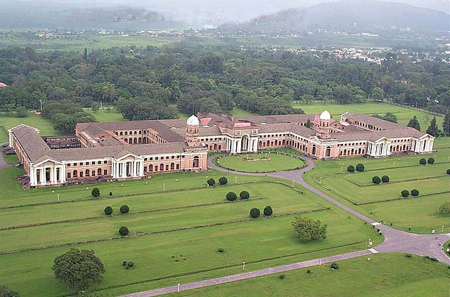
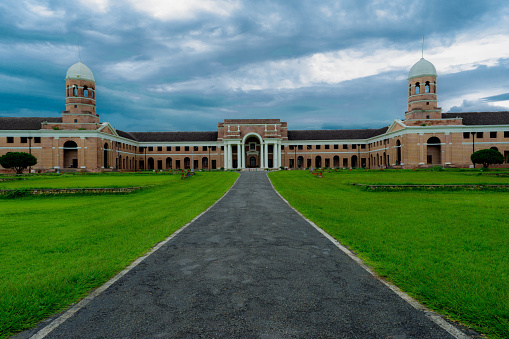
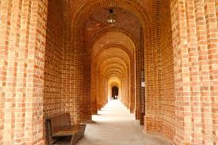
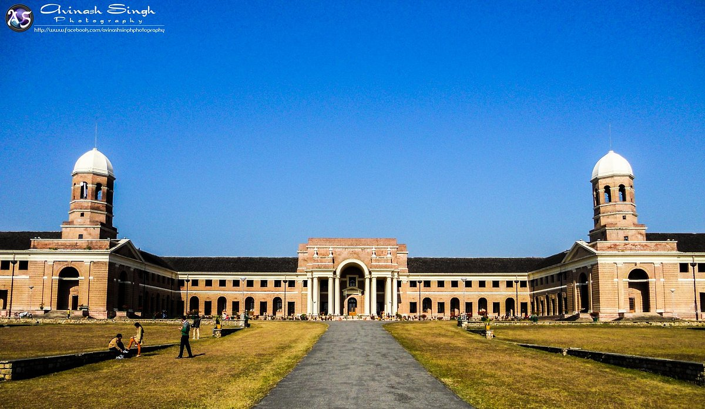

The Forest Research Institute (FRI), Dehradun, is one of the most iconic and architecturally magnificent institutions in India, established in 1906 during the British era. Spread over 450 hectares of lush green campus in the foothills of the Himalayas, FRI is a premier research and education center for forestry, environment, and wildlife sciences. The main building is a stunning example of Indo-Gothic architecture with graceful arches, red-brick facades, long corridors, and Greco-Roman columns — often compared to the grandeur of Rashtrapati Bhavan.
The vast campus feels like a peaceful forest retreat with botanical gardens, rare tree species, walking trails, museums (showing forest products, pathology, timber, and non-wood forest products), and a serene atmosphere perfect for photography, nature walks, and learning. It’s a must-visit for architecture lovers, students, families, and anyone seeking a calm escape from city life. The institute also houses the Indira Gandhi National Forest Academy and serves as a living museum of India’s forestry heritage.
October to March for pleasant weather and clear skies; early morning or late afternoon for soft light on the grand building and fewer crowds.
Indo-Gothic architecture, 450-hectare green campus, six museums, botanical gardens, rare trees, long colonnaded corridors, and peaceful walking trails.
Entry fee applies (small for Indians, higher for foreigners), carry water & comfortable shoes for walking the large campus, visit museums for forestry history, and go early to enjoy the quiet beauty.
"FRI Dehradun is more than an institute — it is a majestic red-brick monument standing tall in the arms of the Himalayas, where history, science, and nature whisper stories of India’s green legacy."